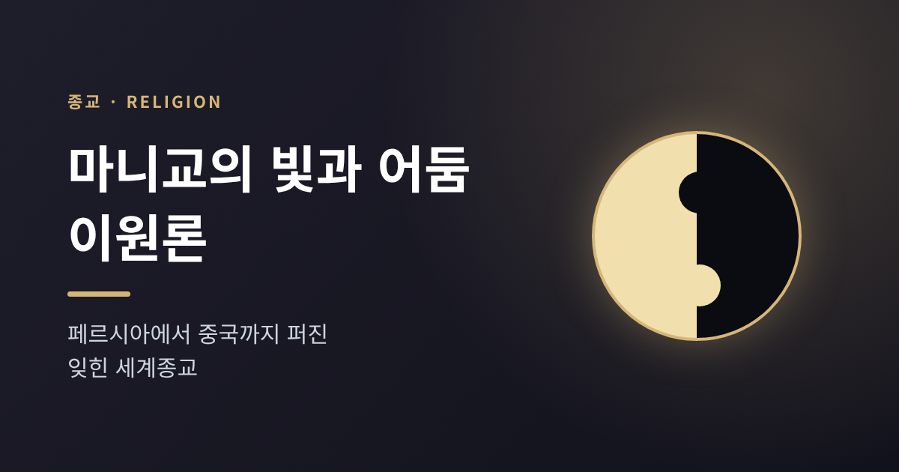
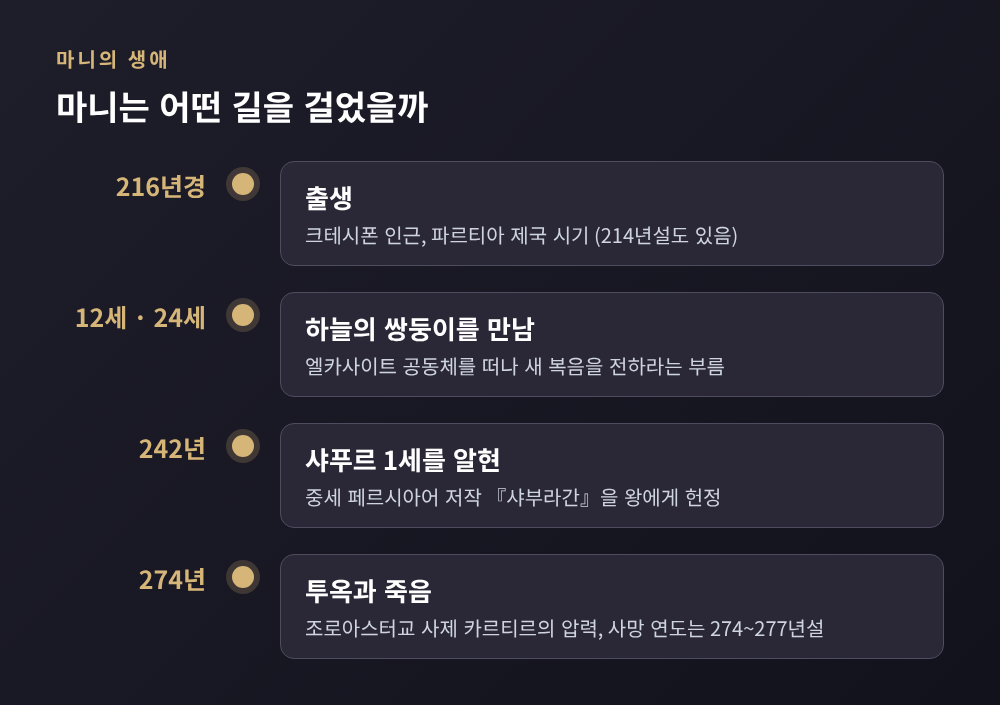
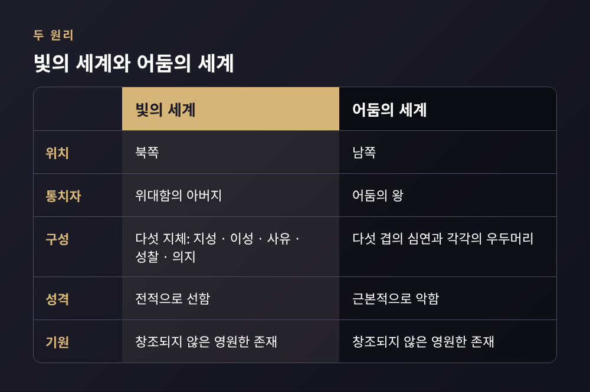
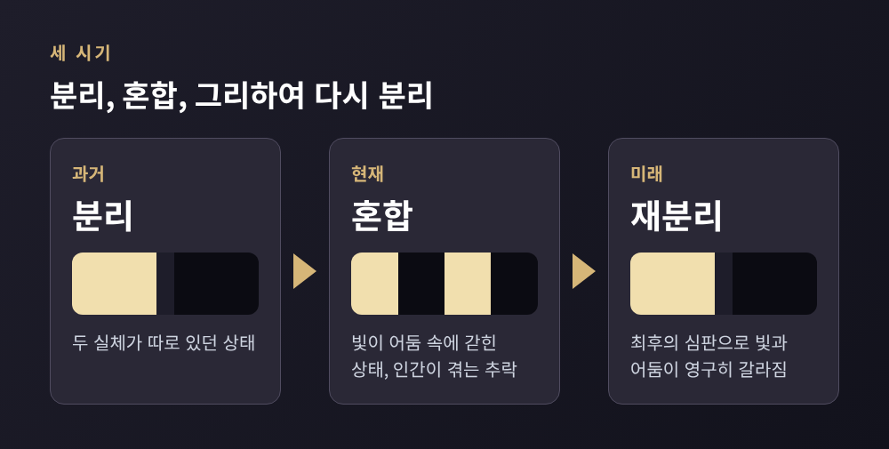
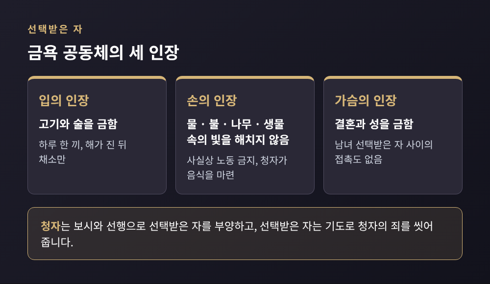

마니교의 빛과 어둠 이원론 — 페르시아에서 중국까지 퍼진 잊힌 세계종교

오늘은 3세기 페르시아에서 태어나 로마와 중국까지 퍼졌다가 역사 속으로 사라진 마니교의 이원론을 정리해 보려 합니다. 마니교는 빛과 어둠이 처음부터 둘로 존재했다고 보고, 인간의 영혼을 어둠에 갇힌 빛의 조각으로 이해한 종교입니다. 마니의 생애, 교리 구조, 아우구스티누스와의 인연, 실크로드를 따라 이어진 전파와 근대의 문헌 발굴까지 차례로 살펴보겠습니다.
■ 마니는 어떤 사람이었을까
마니는 서기 216년 4월경, 메소포타미아의 크테시폰 인근에서 태어난 것으로 전해집니다. 당시는 파르티아 제국 시기였습니다. 214년생이라고 적는 자료도 있어 출생 연도는 학자와 자료에 따라 조금 다릅니다.
아버지 파티크는 엘카사이트라는 유대 기독교 계통의 세례 공동체에 속해 있었습니다. 마니가 네 살쯤일 때 아버지가 이 공동체에 들어갔다고 합니다. 마니는 이질적인 종교 환경 속에서 자란 셈입니다.
전승에 따르면 마니는 12세와 24세에 '하늘의 쌍둥이'를 만났습니다. 이 영적 존재가 아버지의 공동체를 떠나 새 복음을 전하라고 불렀다는 이야기입니다. 이후 마니는 공동체를 떠났고, 추방되었는지 스스로 나왔는지는 전하는 바가 갈립니다. 쌍둥이를 비롯한 이런 서술은 쾰른 마니 코덱스라는 그리스어 문헌에서 나왔습니다. 가로세로 4.5×3.8cm에 불과한 이 작은 책은 "지금까지 발견된 가장 작은 고대 책"으로 불립니다. 마니 생애의 가장 믿을 만한 자료로 꼽히지만, 부분적으로 성인전의 색채가 있다는 점은 감안해야 합니다.
마니는 사카 지역, 곧 지금의 아프가니스탄 일대를 여행하며 힌두교와 불교를 접했다고 전해집니다. 242년에는 사산조의 샤푸르 1세를 찾아갔고, 중세 페르시아어로 쓴 『샤부라간』을 왕에게 바쳤습니다. 샤푸르 1세는 마니교를 용인했지만, 신자였다는 증거는 없습니다.
마니는 스스로를 "예수 그리스도의 사도"라 불렀습니다. 붓다, 조로아스터, 예수가 같은 신의 메시지를 전했고 자신이 그 흐름의 완성이라는 입장이었습니다.

마지막은 비극이었습니다. 샤푸르 1세가 죽은 뒤 조로아스터교 사제 카르티르의 영향력이 커졌고, 바흐람 1세 시기인 274년 마니는 투옥되어 감옥에서 숨졌습니다. 사망 시점은 274년, 276년, 277년으로 자료마다 다릅니다. 처형 방식에도 여러 이야기가 있습니다. 한편 카르티르의 비문이 마니교를 포함한 소수 종교를 '쳐부쉈다'고 자랑하지만, 그것이 실제 박해 규모를 그대로 반영하는지는 의문이라는 학설도 있습니다.
■ 두 원리 — 빛과 어둠은 처음부터 둘이었다
마니교의 핵심은 이원론입니다. 빛과 어둠, 선과 악, 정신과 물질이 서로 맞서는 두 원리로 놓입니다. 흥미로운 대목은 두 세계가 모두 창조되지 않았고 영원하며 위상이 같다고 본다는 점입니다.
빛의 세계는 북쪽에 있고, '위대함의 아버지'를 중심으로 합니다. 지성, 이성, 사유, 성찰, 의지가 그 다섯 '지체'로 설명됩니다. 어둠의 세계는 남쪽에 있고, '어둠의 왕'이 다스립니다. 다섯 겹의 심연마다 우두머리가 있고, 괴물 같은 존재들로 가득하다고 그려집니다.

그렇다면 두 세계가 섞이게 된 계기는 무엇일까요. 마니교의 신화는 이렇게 전합니다. 어둠이 빛의 나라를 침공하자 아버지는 '원초적 인간'을 보냅니다. 그는 공기, 바람, 빛, 물, 불이라는 다섯 아들로 무장했지만 싸움에서 지고 맙니다. 아들들은 악마에게 삼켜지고, 신성한 실체의 일부가 물질 속에 갇힙니다.
이후 '살아 있는 영'이 그를 구하러 내려옵니다. 부름을 내리면 원초적 인간이 응답하는 방식으로 구원이 시작됩니다. 갇힌 빛의 일부로 우주가 지어졌고, 어둠의 존재들이 빛을 삼켜 아담과 하와를 낳았다고 합니다. 그래서 인간은 빛과 어둠이 뒤섞인 존재입니다.
여기서 중요한 것은 구원의 방식입니다. 영혼은 신과 같은 본성을 지녔지만 물질세계에 떨어졌고, 그 기원을 아는 앎이 영혼을 풀어 준다는 것이 마니교의 입장입니다. 영지주의 계통의 구원론이라 불리는 이유입니다.
■ 세 시기 — 분리, 혼합, 다시 분리
마니교의 역사관은 세 시기로 나뉩니다. 아우구스티누스가 쓴 용어로는 시작, 중간, 끝에 해당합니다.

과거에는 두 실체가 따로 있었습니다. 현재는 둘이 섞여 있습니다. 마니교는 이 혼합 상태를 인간이 겪는 '추락'으로 보았습니다. 미래에는 최후의 심판이 빛과 어둠을 영구히 갈라놓고, 빛이 승리한다고 합니다.
죽음 이후의 운명도 정해져 있었습니다. 의로운 영혼은 낙원으로 가고, 그렇지 못한 영혼은 여러 몸을 거치며 다시 태어난다고 설명합니다. 결국 마니교에서 세계의 역사는 섞인 빛을 되찾는 과정입니다.
■ 선택받은 자와 청자 — 두 층으로 나뉜 공동체
이 교리는 일상의 규범으로 이어졌습니다. 교단은 '선택받은 자'와 '청자'라는 두 층으로 구성됩니다. 선택받은 자는 엄격한 금욕 생활을 하고, 청자는 보시와 선행으로 이들을 뒷받침합니다.
핵심 규범은 '세 인장'으로 불립니다. 입의 인장은 고기와 술을 금하며, 선택받은 자는 하루 한 끼를 해가 진 뒤 채소로 먹었습니다. 손의 인장은 물, 불, 나무, 생물 속에 갇힌 빛을 해치지 말라는 뜻입니다. 사실상 노동이 금지되었으므로 청자가 음식을 마련했습니다. 가슴의 인장은 결혼과 성을 금합니다. 이를 다섯 계명으로 정리하는 방식도 있어, 진실, 비폭력, 순결, 입의 청정, 청빈으로 꼽힙니다.

논리는 일관됩니다. 식물을 수확하는 일도 빛을 다치게 한다고 보았으므로, 선택받은 자는 음식을 직접 만들지 않았습니다. 청자가 준비해 주면 선택받은 자가 기도로 그 죄를 씻어 주는 교환 관계였습니다. 소그드 상인들 가운데 개종자가 많았다는 점에서, 이 구조는 상인 사회와도 잘 맞았던 것으로 보입니다.
한계도 분명했습니다. 출산마저 빛의 고통을 늘린다고 보았으니, 선택받은 자의 기준은 대다수 사람에게 너무 높았습니다. 그래서 두 층의 분업이 필요했을 것입니다.
■ 아우구스티누스는 9년간 마니교의 청자였다
서쪽에서 마니교는 4세기에 전성기를 맞아 갈리아 남부와 에스파냐에까지 교회가 세워졌습니다. 이 종교를 가장 유명하게 만든 인물은 아이러니하게도 그 비판자 아우구스티누스입니다.
354년 누미디아의 타가스테에서 태어난 그는 373년 마니교에 입교해 청자로 9년을 보냈습니다. 키케로의 『호르텐시우스』를 읽고 '지혜'를 약속하는 이 종교에 끌렸다고 합니다. 처음에는 열렬한 변호자였습니다. 친구 알리피우스를 끌어들이기도 했습니다.
전환점은 의문이 쌓이면서 찾아왔습니다. 천문학 공부는 마니교의 우주론이 이성적이지 않다는 점을 드러냈습니다. 질문은 마니교 주교 파우스투스에게로 미뤄졌지만, 그는 해결하지 못했습니다. 파우스투스가 이탈리아에서 왔다는 자료와 카르타고를 방문했을 때 아우구스티누스가 29세였다는 자료가 갈려 만남의 정확한 장면은 달리 전합니다. 이후 아우구스티누스는 이탈리아로 건너가 밀라노에서 수사학 교수가 되었고, 암브로시우스와 신플라톤주의의 영향 속에 마니교를 떠났습니다. 387년 부활절에 세례를 받았고, 395년에는 히포의 주교가 되었습니다.
그는 이후 『파우스투스 반박』, 『선의 본성』 등 다수의 반마니교 저술을 남겼습니다. 이 글들은 오랫동안 마니교를 알려 주는 가장 중요한 자료였습니다. 다만 그가 묘사한 마니교는 마니의 본래 가르침이 아니라 기독교 환경에 맞춰 달라진 라틴 마니교라는 지적이 있어, 사료로 읽을 때는 주의가 필요합니다.
그가 평생 마니교의 그림자를 안고 살았는지는 학설이 갈립니다. 바우어와 하르나크는 그의 기독교 사상에서 마니교의 흔적을 읽었고, 카펠레는 신플라톤주의가 훨씬 깊은 영향을 주었다고 보았습니다. 중세에는 이원론적인 믿음이라면 무엇이든 '마니교적'이라 불렀습니다. 파울리키파, 보고밀, 카타리파가 비슷한 특징을 지녔다고 하나 직접 연결은 입증하기 어렵습니다.
■ 실크로드를 따라 동쪽으로 — 위구르와 중국
서쪽의 마니교는 제국의 박해로 5~6세기에 거의 사라졌지만, 동쪽에서는 전혀 다른 길을 걸었습니다. 제자 마르 암모가 동이란 지역에 전도했고, 소그드어, 파르티아어, 박트리아어 등으로 경전이 번역되었습니다. 파르티아어 문헌에는 불교 용어가 스며들었습니다. 번역하며 현지 종교의 언어를 빌려 쓴 것입니다.
중국에는 7세기 후반 이후의 대상로를 따라 들어왔습니다. 도착 연도는 자료마다 694년, 719년, 731년 등으로 다르게 적힙니다. 719년 토하리스탄 왕이 보낸 사제 모작이 천문 지식으로 당 조정의 환대를 받았다는 기록이 있고, 731년의 『마니광불교법의략』은 마니를 '광명불'로, 노자의 화신처럼 그렸습니다. 같은 해의 법은 외국인의 신앙은 허용하되 중국인에게 전하는 일은 금지했습니다.
가장 큰 전환은 위구르에서 일어났습니다. 보구 가한은 낙양에서 마니교 사제 네 명을 만나 수도 오르두 발릭으로 데려왔고, 762년 또는 763년에 마니교를 국교로 선포했습니다. 연도는 자료마다 다릅니다. 한 역사가는 그를 "마니교를 개인과 국가의 종교로 채택한 역사상 최초의 통치자"라 평가합니다. 당은 마지못해 장안과 낙양 등 여섯 도시에 마니교 사원을 허용했습니다.
그러나 끝은 쓸쓸했습니다. 780년 보수적인 텡그리 신봉자의 쿠데타로 보구와 지지자 2,000~3,000명이 살해되었습니다. 840년 위구르 제국이 무너지고, 843년 외래 종교 금지령 속에서 마니교 사제들이 처형되었습니다. 살아남은 위구르인들은 투르판 지역으로 옮겨 갔습니다.
중국 남부에서는 다른 모습으로 이어졌습니다. 오대 시기에 비밀 종교로 되살아나 천주 일대에서 퍼졌고, 1120년 방랍의 난 이후에는 압수한 경전 19종을 적은 상주문이 남았습니다. 몽골 지배기에는 한 세기가량 상대적 자유를 누렸고, 명이 들어선 뒤 다시 박해를 받았습니다. 푸젠성의 초암에는 곧은 머리칼과 수염에 두 손을 배 위에 올린 '광명불' 마니상이 1339년 기증 명문과 함께 남아 있습니다. 불교 사원으로 쓰이면서도 학자들이 "불교로 위장한 마니교 사원"이라 부르는 곳입니다.
■ 잊힌 종교를 되찾은 발굴
마니교의 원전은 대부분 사라졌습니다. 그래서 20세기의 발굴이 결정적이었습니다.
1900년 6월 25일 둔황 막고굴 장경동이 발견되었고, 스타인과 펠리오가 문서를 가져가면서 한문 마니교 문헌이 알려졌습니다. 이 가운데 약 서른 편의 찬가를 담은 '찬가 두루마리'와 731년 연대의 『마니광불교법의략』이 있습니다. 투르판에서는 독일 탐험대가 20세기 초에 중세 페르시아어, 파르티아어, 소그드어, 고대 튀르크어 문서 단편을 찾아냈습니다. 발굴 중에 일부가 훼손되었고, 살아남은 상당수는 2차대전 시기 소금광산에 보관되었다고 합니다.
이집트에서는 4세기 콥트어 파피루스 코덱스가 1929년경 상인들 사이에서 나뉘어 팔렸고, 『케팔라이아』와 시편집 등이 포함되어 있었습니다. 1991년에는 다클라 오아시스의 켈리스에서 4세기 마니교 문서가 나왔고, 1969년 쾰른대가 입수한 작은 코덱스는 마니의 생애를 전해 주었습니다. 오래전 사라진 종교의 목소리가 지중해에서 중국까지 모래 속에 묻혀 있었던 셈입니다.
정리하면 이렇습니다. 마니교는 빛과 어둠, 두 원리가 섞인 현재를 살며 빛을 되찾아 간다는 세계관을 세 시기와 두 층의 공동체로 구현한 종교였습니다. 한쪽에서는 아우구스티누스의 비판 속에, 다른 쪽에서는 위구르와 중국의 비문과 사원 속에 흔적이 남았습니다.
가르침의 옳고 그름을 따지는 일은 이 글의 몫이 아닙니다. 다만 하나는 분명합니다. 페르시아의 한 사람이 시작한 이야기가 대륙을 가로질러 천 년 넘게 이어졌다는 사실입니다. 사라진 종교를 아는 일은 지금 남은 종교와 철학이 서로 어떻게 말을 주고받았는지를 이해하는 일과 닿아 있습니다.
그렇다면 이 이야기에서 무엇을 가져가시겠습니까. 저라면 하나의 질문을 택하겠습니다. 선과 악이 처음부터 나란히 있다고 보는 시선은 왜 그토록 오래, 그토록 멀리 사람들을 사로잡았을까요.